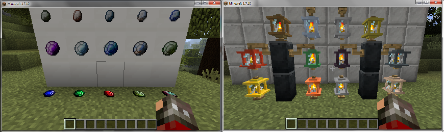
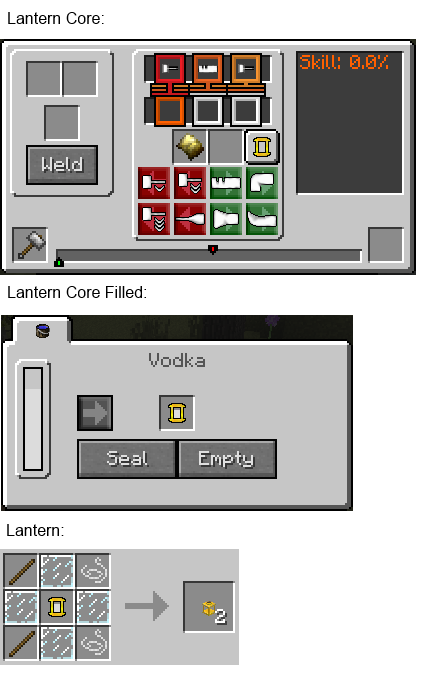
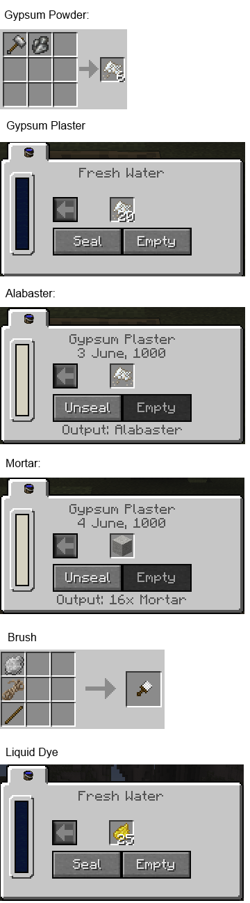
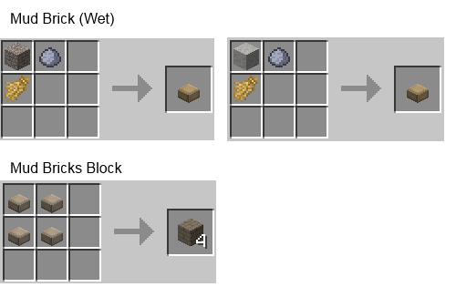

这个wiki将帮助你更好的进行游戏
Author: Bob Yuan
Decorations 整合了 TFC Lanterns 插件，又在此基础上增加了一些其他的方块来增强装饰能力

可以从 Tier 1 - Tier 3 的金属以及合金制作多达 12 种灯笼。 Tier3 及以上的金属或合金做成的灯笼有最大亮度，其余所有属性都是一样的。
空手 Shift + 右键 点击灯笼可以开关
灯笼的亮度等级可以在配置文件里编辑（目前使用默认配置）
需要先制作 Lantern Core，Lantern Core 使用任何 Tier 1 - 3 金属或合金在 Anvil（铁砧）打造，打造方法如下图所示
Lantern Core 制作好之后，需要酒精（任意一种酒）作为燃料填充，每个 Lantern Core 消耗 2000ml 酒精。
然后再使用棍子，绳子，和玻璃板加上 Lantern Core Filled 制作成 Lantern

允许手持宝石右键点击任何固体方块的侧面将宝石镶嵌在方块上。
如果方块被摧毁，那么宝石将会掉落
附着的宝石可以被当作光源，亮度等级如下：
Exquisite: 15
Flawless: 14
Normal: 13
Flawed: 12
Chipped: 11
亮度等级可以在配置文件里编辑（本服务器使用默认配置）
可以从 Gypsum（石膏）里制作 Gypsum Powder（石膏粉）， 石膏粉可以被用于生产 (Gypsum Plaster) 石膏抹灰，石膏抹灰可以用来制作砂浆和雪花石膏方块。
雪花石膏方块有如下特点：
使用锤子和 Gypsum（石膏）其粉碎成 Gypsum Powder
将 Gypsum Powder 置于淡水的桶（Barrel）中，每 1 块消耗 500mB 淡水，满满一桶淡水正好需要 20 块 Gypsum Powder，得到了 Gypsum Plaster（石膏抹灰），如果你有足够的 gypsum powder 这个过程是瞬间完成的。
再将 Gypsum Powder 置于 Gypsum Plaster 的桶里，每块 Gypsum Powder 需要 50mB 的 Gypsum Plaster，然后 Seal（封印）Barrel，下面显示输出为 Alabaster Block，等待若干小时。 满满一桶 Gypsum Plaster 可以生产 200 个 Alabaster Block。这个过程总共消耗 200 + 20 个 Gypsum Powder
类似与 Limewater（石灰水）制作砂浆的原理，将沙子（Sand）放入 Gypsum Plaster 里，seal 即可。

这些泥砖可以用于替代石砖，并在进入金属时代之前生产。
泥砖颜色取决于材料（主要是泥土的岩石种类）
泥砖有如下特点：
首先使用沙子，稻草，粘土合成潮湿的泥砖，然后将泥砖放在地面上，等待 12 小时，取回泥砖，此时得到了干燥的泥砖，将 4 个干燥的泥砖合成泥砖方块 (Mud Brick Block)

Last Update: Tue Dec 06 2016 19:01:34 GMT+0800 (CST) Source File